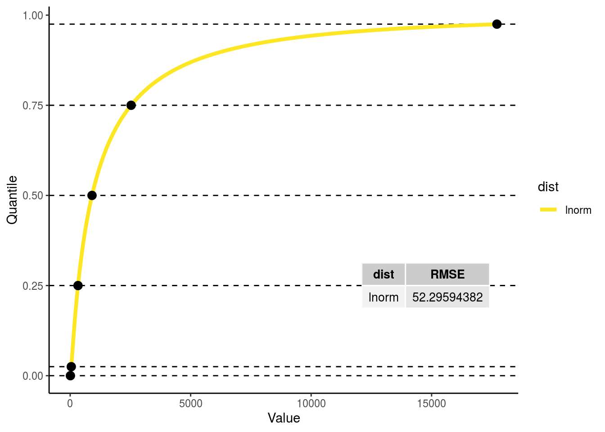

Hydraulic Wood Traits
[wood_psi_osmotic]: Sapwood osmotic water potential at saturation
ED
- ED variable name :
wood_psi_osmotic - ED variable units:
m
BETY
- Variable id:
1000000298 - Prior id:
1000000410
NOTE!! The units are NEGATIVE in the database so we can calculate a distribution that is entirely negative.
Calculation
Expert elicitation
Expert elicitation provided by Brad Christoffersen
- FATES varaiable name:
pinot_node (stem) - FATES variable units:
m
Conversion
MPa to m
Code
t = "wood_psi_osmotic"
t_long = "Sapwood osmotic water potential at saturation "
i <- which(priors$ED_name == t)
prior_in <- priors[i, stats] * C$MPa2m
traits <- fit_trait_dist(bety, traits, t, prior_in, accepted_dists)
## Entry with id = 1000000410 already exists.
## Parameters look the saaaaame.
## Old: weibull(2.4100, 237.4600)
## New: weibull(2.4100, 237.4600)traits[[t]]$prior = -1 * rdistn(traits[[t]]$fit)
traits[[t]]$default = get_ED_default(PFT3_defaults_history, t)
prior_plot(prior = traits[[t]]$prior,
plot_default = traits[[t]]$default,
title = sprintf("%s(%s):\n%s(%.4f, %.4f)", t_long, t,
traits[[t]]$fit$distn,
traits[[t]]$fit$parama,
traits[[t]]$fit$paramb),
type = "elic")
[wood_elastic_mod]: Sapwood bulk elastic modulus
ED
- ED variable name :
wood_elastic_mod - ED variable units:
MPaNote! This is the only case in which MPa is used instead of m!
BETY
- Variable id:
1000000303 - Prior id:
1000000394
Calculation
Expert elicitation
Expert elicitation provided by Brad Christoffersen
- FATES varaiable name:
epsil_node (stem) - FATES variable units:
MPa
Conversion
None!
Code
t = "wood_elastic_mod"
t_long = "wood bulk elastic modulus "
i <- which(priors$ED_name == t)
prior_in <- priors[i,]
traits <- fit_trait_dist(bety, traits, t, prior_in, accepted_dists)
## Entry with id = 1000000394 already exists.
## Parameters look the saaaaame.
## Old: gamma(3.4400, 0.1600)
## New: gamma(3.4400, 0.1600)traits[[t]]$prior = rdistn(traits[[t]]$fit)
traits[[t]]$default = get_ED_default(PFT3_defaults_history, t)
prior_plot(prior = traits[[t]]$prior,
q = c(0,.999),
plot_default = traits[[t]]$default,
title = sprintf("%s(%s):\n%s(%.4f, %.4f)", t_long, t,
traits[[t]]$fit$distn,
traits[[t]]$fit$parama,
traits[[t]]$fit$paramb),
type = "elic")## Warning: Removed 100 rows containing non-finite values (stat_density).
[wood_water_sat]: Sapwood water content at saturation
ED
- ED variable name:
wood_water_sat - ED variable units:
kg H2O/kg biomass
BETY
- Variable id: ``
- Prior id: ``
Calculation
Expert elicitation
Expert elicitation provided by Brad Christoffersen
- FATES variable name:
thetas_node (stem) - FATES variable units:
kg kg-1
Conversion
multiply by the density of water over wood density
Code
t = "wood_water_sat"
t_long = "Wood water content at saturation "
i <- which(priors$ED_name == t)
temp_wws_fit <- prior_get_fit(priors[i,], accepted_dists, plot = FALSE)
temp_wws_fit$score$dist[which.min(temp_wws_fit$score$RMSE)]## [1] "norm"# I'm skipping steps here for the sake of time and sanity
# Normal is the best fit
temp_wws_prior <- rnorm(100000, temp_wws_fit$dists$norm[1], temp_wws_fit$dists$norm[2])
temp_wws_sample <- temp_wws_prior * (C$wdns/(traits[["wood_density"]]$prior * 1e3))
# Note that here we have to multiply by 1e3 because of the units of wood density
# In this case I'm not using the function I built because here it wouldn't make sense.
prior_in <- data.frame(
theor.min = NA,
low.025 = quantile(temp_wws_sample, c(.025), na.rm = TRUE),
low.25 = quantile(temp_wws_sample, c(.25), na.rm = TRUE),
mean = quantile(temp_wws_sample, c(.5), na.rm = TRUE),
upp.75 = quantile(temp_wws_sample, c(.75), na.rm = TRUE),
upp.975 = quantile(temp_wws_sample, c(.975), na.rm = TRUE),
theor.max = NA)
traits <- fit_trait_dist(bety, traits, t, prior_in, accepted_dists)
## Entry with id = 1000000424 already exists.
## Parameters look the saaaaame.
## Old: lnorm(0.0100, 0.6100)
## New: lnorm(0.0100, 0.6100)traits[[t]]$prior = rdistn(traits[[t]]$fit)
traits[[t]]$default = get_ED_default(PFT3_defaults_history, t)
prior_plot(prior = traits[[t]]$prior,
q = c(0,.99),
plot_default = traits[[t]]$default,
title = sprintf("%s(%s):\n%s(%.4f, %.4f)", t_long, t,
traits[[t]]$fit$distn,
traits[[t]]$fit$parama,
traits[[t]]$fit$paramb),
type = "mixed")## Warning: Removed 1000 rows containing non-finite values (stat_density).
[wood_psi_tlp]: Sapwood water potential at turgor loss point
ED
- ED variable name:
wood_psi_tlp - ED variable units:
m
BETY
- Variable id: ``
- Prior id: ``
NOTE!! The units are NEGATIVE in the database so we can calculate a distribution that is entirely negative.
Calculation
Expert elicitation
No expert elicitation provided by Brad Christoffersen.
There is a FATES parameter but it is calculated from other parameters
- FATES variable name:
pitlp_node - FATES variable units:
MPa
Constraints we added
- wood_psi_tlp > .1 MPa (this was given as a boundary for other psi variables)
Conversion
Calculated from other parameters:
wood_psi_osmoticandwood_elastic_modRemember that
wood_elastic_modisMPa, where everything else ism!
Code
wood_psi_tlp_samp =
(wood_psi_osmotic_prior * wood_elastic_mod_prior * C$MPa2m)/
(wood_psi_osmotic_prior + wood_elastic_mod_prior * C$MPa2m)t = "wood_psi_tlp"
t_long = "Sapwood water potential at turgor loss point "
temp_wpt_sample <-
(traits[["wood_psi_osmotic"]]$prior * traits[["wood_elastic_mod"]]$prior * C$MPa2m)/
(traits[["wood_psi_osmotic"]]$prior + traits[["wood_elastic_mod"]]$prior * C$MPa2m)
summary(temp_wpt_sample)## Min. 1st Qu. Median Mean 3rd Qu. Max.
## -169657.7617 -326.4036 -231.7416 -261.7656 -154.2457 48647.5248i <- which(priors$ED_name == t)
prior_in <- priors[i,stats] * C$MPa2m # Convert from MPa to m
prior_in <- prior_add_samp_data(prior_in, samp = -temp_wpt_sample)
prior_in[,stats]## theor.min low.025 low.25 mean upp.75 upp.975
## 1 10.19716213 49.65526652 154.2456642 231.7415966 326.4035836 611.3858528
## theor.max
## 1 NA
## Entry with id = 1000000416 already exists.
## Parameters look the saaaaame.
## Old: lnorm(5.4300, 0.5500)
## New: lnorm(5.4300, 0.5500)traits[[t]]$prior <- -1 * rdistn(traits[[t]]$fit) # Remember to flip back over for psi
traits[[t]]$default <- get_ED_default(PFT3_defaults_history, t)
p_plot <- prior_plot(prior = traits[[t]]$prior,
# q = c(.005,1),
plot_default = traits[[t]]$default,
title = sprintf("%s(%s):\n%s(%.4f, %.4f)", t_long, t,
traits[[t]]$fit$distn,
traits[[t]]$fit$parama,
traits[[t]]$fit$paramb),
type = "mixed")
traits[[t]]$obs <- -1 * trait_data %>% filter(var == t) %>% pull(mean)
obs_plot <- data.frame(mean = traits[[t]]$obs, y = 0)
p_plot +
geom_density(data = obs_plot, aes(x = mean, fill = "obs", color = "obs"), alpha = .3) +
geom_point(data = obs_plot, aes(x = mean, y = y, color = "obs"), shape = "o", size = 3)
[wood_water_cap]: Wood hydaulic capacitance
ED
- ED variable name :
wood_water_cap - ED variable units:
kg H2O/kg biomass/m
BETY
Different units in BETY so we can fit a distribution! The numbers were so small that I couldnt get the fitting function to work until I scaled the variable up!
- BETY varaible units:
g H2O / kg biomass / m
Calculation
Expert elicitation
No expert elicitation provided by Brad Christoffersen.
Constraints we added
- wood_water_cap > 1e-07 kg H2O/kg biomass/m
Code
# wood_water_cap_samp <-
# 1000 * (1/wood_density_prior) * (1 - wood_psi_osmotic_prior / (4 * wood_psi_tlp_prior)) *
# (wood_water_sat_prior / (4 * abs(wood_psi_tlp_prior)))
temp_wwc_samp <-
1000 * (1/traits[["wood_density"]]$prior) * (1 - traits[["wood_psi_osmotic"]]$prior /
(4 * traits[["wood_psi_tlp"]]$prior)) *
(traits[["wood_water_sat"]]$prior /
(4 * abs(traits[["wood_psi_tlp"]]$prior)))
summary(temp_wwc_samp)## Min. 1st Qu. Median Mean 3rd Qu. Max.
## -140.6434961 0.7543873 1.4317272 2.3744512 2.8016234 94.9370757t = "wood_water_cap"
t_long = "Wood Water Cap "
i <- which(priors$ED_name == t)
prior_in <- priors[i,stats]
prior_in <- prior_add_samp_data(prior_in, samp = temp_wwc_samp)
prior_in[,stats]## # A tibble: 1 x 7
## theor.min low.025 low.25 mean upp.75 upp.975 theor.max
## <dbl> <dbl> <dbl> <dbl> <dbl> <dbl> <dbl>
## 1 0.0000001 0.199 0.754 1.43 2.80 10.9 NA
## Entry with id = 1000000417 already exists.
## Parameters look the saaaaame.
## Old: lnorm(0.3700, 0.9800)
## New: lnorm(0.3700, 0.9800)# I don't actually remember why we were plotting 10, 100, 300, 900 ... ?
traits[[t]]$prior = rdistn(traits[[t]]$fit) * (1/1000) # Convert back to kg
traits[[t]]$default = get_ED_default(PFT3_defaults_history, t)
p_plot <- prior_plot(prior = traits[[t]]$prior,
q = c(0, .995),
plot_default = traits[[t]]$default,
title = sprintf("%s(%s):\n%s(%.4f, %.4f)", t_long, t,
traits[[t]]$fit$distn,
traits[[t]]$fit$parama,
traits[[t]]$fit$paramb),
type = "mixed") +
geom_vline(aes(xintercept = 10/C$MPa2m * (1/1000)), color = "gray") +
geom_vline(aes(xintercept = 100/C$MPa2m * (1/1000)), color = "gray") +
geom_vline(aes(xintercept = 300/C$MPa2m * (1/1000)), color = "gray") +
geom_vline(aes(xintercept = 900/C$MPa2m * (1/1000)), color = "gray")
traits[[t]]$obs <- trait_data %>% filter(var == t) %>% pull(mean) * (1/1000) # Convert back to kg
obs_plot <- data.frame(mean = traits[[t]]$obs, y = 0)
p_plot +
geom_density(data = obs_plot, aes(x = mean, fill = "obs", color = "obs"), alpha = .3) +
geom_point(data = obs_plot, aes(x = mean, y = y, color = "obs"), shape = "o", size = 3)## Warning: Removed 500 rows containing non-finite values (stat_density).## Warning: Removed 1 rows containing non-finite values (stat_density).## Warning: Removed 1 rows containing missing values (geom_point).
[wood_psi_min]: Sapwood minimum relative water content or Sapwood residual fraction
ED
- ED variable name :
wood_psi_min - Ed variable units:
m
BETY
Negative units in BETY so we can fit a distribution!
- BETY varaible units:
-m
Calculation
Expert elicitation
There are no FATES parameters
Constraints we added
- wood_psi_min > .1 MPa (this was given as a boundary for other psi variables)
Code
Calculated from other priors.
Should I put wood_rwc_min and rwc_tlp_wood in the database too?
# rwc_tlp_wood_samp <- 1. - (1. - 0.75 * wood_density_prior) / (2.74 + 2.01 * wood_density_prior)
# wood_rwc_min_samp = wood_elastic_mod_prior * (1. - rwc_tlp_wood_samp) / (wood_psi_osmotic_prior / C$MPa2m) + 1.
# wood_psi_min_samp = (wood_rwc_min_samp - 1.) * wood_water_sat_prior / wood_water_cap_prior
temp_rwc_tlp_wood_samp <- 1. - (1. - 0.75 * traits[["wood_density"]]$prior) / (2.74 + 2.01 * traits[["wood_density"]]$prior)
temp_wood_rwc_min_samp = traits[["wood_elastic_mod"]]$prior * (1. - temp_rwc_tlp_wood_samp) / (traits[["wood_psi_osmotic"]]$prior / C$MPa2m) + 1.
temp_wood_rwc_min_samp = (temp_wood_rwc_min_samp - 1.) * traits[["wood_water_sat"]]$prior / traits[["wood_water_cap"]]$prior
t = "wood_psi_min"
t_long = "Wood Psi Min "
i <- which(priors$ED_name == t)
prior_in <- priors[i,stats] * C$MPa2m # Convert from MPa to m
prior_in <- prior_add_samp_data(prior_in, samp = -temp_wood_rwc_min_samp)
prior_in[,stats]## theor.min low.025 low.25 mean upp.75 upp.975
## 1 10.19716213 46.03560362 325.4214013 906.7828218 2529.777505 17709.45412
## theor.max
## 1 NA
## Entry with id = 1000000419 already exists.
## Parameters look different.
## Old: lnorm(6.8000, 1.5200)
## New: lnorm(6.8100, 1.5200)traits[[t]]$prior = -1 * rdistn(traits[[t]]$fit) # Remember to flip back over for psi
traits[[t]]$default = get_ED_default(PFT3_defaults_history, t)
prior_plot(prior = traits[[t]]$prior,
q = c(.025,1),
plot_default = traits[[t]]$default,
title = sprintf("%s(%s):\n%s(%.4f, %.4f)", t_long, t,
traits[[t]]$fit$distn,
traits[[t]]$fit$parama,
traits[[t]]$fit$paramb),
type = "mixed")## Warning: Removed 2500 rows containing non-finite values (stat_density).[wood_Kmax]: Maximum hydraulic conductivity of the stem
ED
- ED variable name :
wood_Kmax - ED variable units:
kg H2O / m / sNote! This is the only case in which MPa is used instead of m!
BETY
Calculation
Expert elicitation
Expert elicitation provided by Brad Christoffersen
- FATES varaiable name:
kmax_node - FATES variable units:
kg m-1 s-1 MPa-1
Conversion
I dont think we need to multiply by the density of water which is confusing.
Code
t = "wood_Kmax"
t_long = "Maximum hydraulic conductivity of the stem "
i <- which(priors$ED_name == t)
prior_in <- priors[i, stats] / C$MPa2m
fit_trait_dist(bety, traits, t, prior_in, accepted_dists, return_traits = FALSE)
## Entry with id = 1000000418 already exists.
## Parameters look the saaaaame.
## Old: exp(32.6600)
## New: exp(32.6600)# In this case, the exponential function is the best fit,
# but I'm going to choose the beta function because it is much easier to deal
# with in the meta analysis. This could be wrong and we may need to return to it.
traits <- fit_trait_dist(bety, traits, t, prior_in, accepted_dists = "beta")
## Entry with id = 1000000430 already exists.
## Parameters look the saaaaame.
## Old: beta(0.7200, 21.9500)
## New: beta(0.7200, 21.9500)traits[[t]]$prior = rdistn(traits[[t]]$fit)
traits[[t]]$default = get_ED_default(PFT3_defaults_history, t)
p_plot <- prior_plot(prior = traits[[t]]$prior,
q = c(0,.975),
plot_default = traits[[t]]$default,
title = sprintf("%s(%s):\n%s(%.4f, %.4f)", t_long, t,
traits[[t]]$fit$distn,
traits[[t]]$fit$parama,
traits[[t]]$fit$paramb),
type = "elic")
traits[[t]]$obs <- trait_data %>% filter(var == t) %>% pull(mean)
obs_plot <- data.frame(mean = traits[[t]]$obs, y = 0)
p_plot +
geom_density(data = obs_plot, aes(x = mean, fill = "obs", color = "obs"), alpha = .3) +
geom_point(data = obs_plot, aes(x = mean, y = y, color = "obs"), shape = "o", size = 3)## Warning: Removed 2500 rows containing non-finite values (stat_density).## Warning: Removed 3 rows containing non-finite values (stat_density).## Warning: Removed 3 rows containing missing values (geom_point).
[wood_psi50]: Water potential at which 50% of stem conductivity is lost
ED
- ED variable name :
wood_psi50 - ED variable units:
m
BETY
Negative units in BETY so we can fit a distribution!
- BETY varaible units:
-m
Calculation
NOTE: There is an ERROR in the ED code for the equation for wood_psi50
Should be:
(-1.09-(3.57 * rho(ipft) ^ 1.73) * C$MPa2m
This one is tricky, do we keep the normal distribution because its the best fit?
Expert elicitation
- FATES varaiable name:
p50_node (stem) - FATES variable units:
MPa
Conversion
MPa to m
Code
Using the best fit norm
t = "wood_psi50"
t_long = "Water potential at which 50% of stem conductivity is lost "
i <- which(priors$ED_name == t)
prior_in <- priors[i, stats] * C$MPa2m
fit_trait_dist(bety, traits, t, prior_in, accepted_dists, return_traits = FALSE)
## Entry with id = 1000000360 already exists.
## Parameters look the saaaaame.
## Old: norm(284.6500, 176.3200)
## New: norm(284.6500, 176.3200)# In this case norm is the best fitting ditribution,
# But a positive number ends up falling within the 95% CI of the distribution.
# So I'm going to choose a log normal distribution even though it is not the best fit.
# Hopefully this can also be fixed given that we have data for both psi50 and Kexp...
traits <- fit_trait_dist(bety, traits, t, prior_in, accepted_dists = "lnorm")
## Entry with id = 1000000420 already exists.
## Parameters look the saaaaame.
## Old: lnorm(5.2800, 0.8500)
## New: lnorm(5.2800, 0.8500)traits[[t]]$prior = -1 * rdistn(traits[[t]]$fit)
# Calculating default from wood density by hand because it is calculated incorrectly in ED!
traits[[t]]$default = (-1.09 - (3.57 * traits[["wood_density"]]$default ^ 1.73)) * C$MPa2m
p_plot <- prior_plot(prior = traits[[t]]$prior,
q = c(0.025,1),
plot_default = traits[[t]]$default,
title = sprintf("%s(%s):\n%s(%.4f, %.4f)", t_long, t,
traits[[t]]$fit$distn,
traits[[t]]$fit$parama,
traits[[t]]$fit$paramb),
type = "elic")
traits[[t]]$obs <- trait_data %>% filter(var == t) %>% pull(mean) * -1
obs_plot <- data.frame(mean = traits[[t]]$obs, y = 0)
p_plot +
geom_density(data = obs_plot, aes(x = mean, fill = "obs", color = "obs"), alpha = .3) +
geom_point(data = obs_plot, aes(x = mean, y = y, color = "obs"), shape = "o", size = 3)## Warning: Removed 2500 rows containing non-finite values (stat_density).
[ax]: Slope of xylem vulnerability curve at P50
ED
Not in ED, but will be used to calculate Kexp.
BETY
Calculation
Expert elicitation
Expert elicitation provided by Brad Christoffersen
- FATES varaiable name:
avuln_node (stem) - FATES variable units: unitless
Conversion
None!
Code
t = "ax"
t_long = "Slope of xylem vulnerability curve at P50 "
i <- which(priors$Christoffersen_name == "avuln_node")
prior_in <- priors[i, stats]
traits <- fit_trait_dist(bety, traits, t, prior_in, accepted_dists)
## Entry with id = 1000000421 already exists.
## Parameters look the saaaaame.
## Old: exp(0.0200)
## New: exp(0.0200)traits[[t]]$prior = rdistn(traits[[t]]$fit)
prior_plot(prior = traits[[t]]$prior,
q = c(0,.975),
title = sprintf("%s(%s):\n(%s, %.4f)", t_long, t,
traits[[t]]$fit$distn,
traits[[t]]$fit$parama),
type = "elic")## Warning: Removed 2500 rows containing non-finite values (stat_density).
[wood_Kexp]: Exponent for the hydraulic vulnerability curve of stem conductivity
under the Weibull function 1/(1+(psi/psi50) ^ Kexp_stem)
ED
- ED variable name :
wood_Kexp - ED variable units: unitless
BETY
Calculation
Kexp = -ax * 4 * p50 / 100
Expert elicitation
None
Conversion
None!
Code
t = "wood_Kexp"
t_long = "Exponent for the hydraulic vulnerability curve of stem conductivity "
temp_wood_Kexp_samp <- -1 * traits[["ax"]]$prior * 4 * (traits[["wood_psi50"]]$prior/C$MPa2m) / 100
summary(temp_wood_Kexp_samp)## Min. 1st Qu. Median Mean 3rd Qu. Max.
## 0.0000250 0.8779491 2.4681003 5.4610349 6.1900467 667.6019459i <- which(priors$ED_name == t)
prior_in <- priors[i,stats]
prior_in <- prior_add_samp_data(prior_in, samp = temp_wood_Kexp_samp)
prior_in[,stats]## # A tibble: 1 x 7
## theor.min low.025 low.25 mean upp.75 upp.975 theor.max
## <dbl> <dbl> <dbl> <dbl> <dbl> <dbl> <dbl>
## 1 NA 0.0691 0.878 2.47 6.19 29.1 NA
## Entry with id = 1000000425 already exists.
## Parameters look different.
## Old: weibull(0.8000, 4.0700)
## New: weibull(0.8000, 4.0600)traits[[t]]$prior = rdistn(traits[[t]]$fit)
# Calculating default from wood density by hand because it is calculated incorrectly in ED!
traits[[t]]$default = 0.544 * 4. * (-traits[["wood_psi50"]]$default / C$MPa2m) ^ (-0.17)
p_plot <- prior_plot(prior = traits[[t]]$prior,
q = c(0,.975),
plot_default = traits[[t]]$default,
title = sprintf("%s(%s):\n%s(%.4f, %.4f)", t_long, t,
traits[[t]]$fit$distn,
traits[[t]]$fit$parama,
traits[[t]]$fit$paramb),
type = "equation")
traits[[t]]$obs <- trait_data %>% filter(var == t) %>% pull(mean)
obs_plot <- data.frame(mean = traits[[t]]$obs, y = 0)
p_plot +
geom_density(data = obs_plot, aes(x = mean, fill = "obs", color = "obs"), alpha = .3) +
geom_point(data = obs_plot, aes(x = mean, y = y, color = "obs"), shape = "o", size = 3)## Warning: Removed 2500 rows containing non-finite values (stat_density).
Note: here the miscalculation of psi50 in the code barely shows up because the value is divided by a large number.